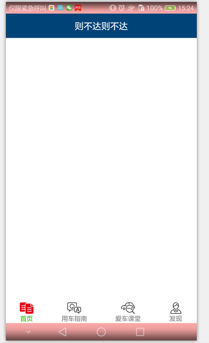
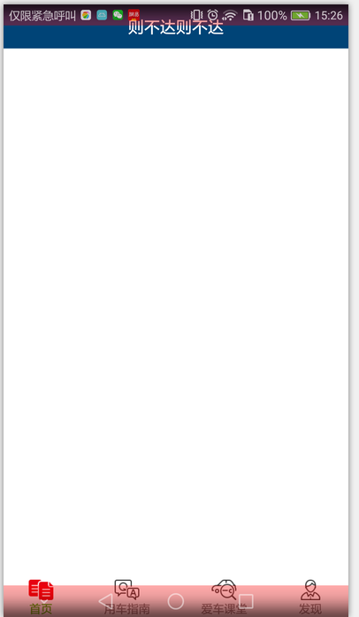

SystembarTint
github地址：https://github.com/cowthan/AyoCompoment
7 状态栏一体化
注意，这两个方法总是得一块用，不要单独用
///status bar和navigate bar的颜色，如果是浅色，还需要配合SystamBarExtra里的方法加以优化，但不支持三星手机
getAgent().renderSystemBar(Color.YELLOW, Color.GREEN);
///status bar和navigate bar是否被侵占
getAgent().enableSystemBarTakenByContent(false);
这两个方法其实是对应着主题里的：
<item name="colorPrimary">@color/colorPrimary</item>
<item name="colorPrimaryDark">@color/colorPrimaryDark</item>
<item name="colorAccent">@color/colorAccent</item>
和布局里的：
fitSystemWindow="true"
当然，代码里设置的优先级比较高
下面多说点，systembar涉及到两个问题：
- 问题1：颜色设置，可以开启和关闭，分status bar和navigation bar
- 问题2：是否侵入，可以开启和关闭，和颜色设置不冲突
代码：
@Override
protected void onCreate(Bundle savedInstanceState) {
super.onCreate(savedInstanceState);
setContentView(R.layout.sample_ac_main);
//关闭StatusBar和NavigationBar侵入
getAgent().enableSystemBarTakenByContent(false);
//给StatusBar和NavigaionBar染色
getAgent().renderSystemBar(Color.parseColor("#55ff0000"), Color.parseColor("#55ff0000"));
}
- 解析：
- 这里就是对开源代码SystemBarTintManager的简单封装
- enableSystemBarTakenByContent其实就是设置根布局的
android:fitsSystemWindows属性
fitSystemWindows是true时：enableSystemBarTakenByContent(false)，内容给SystemBar留空 
fitSystemWindows是false时：enableSystemBarTakenByContent(true)，内容侵入SystemBar 
其他问题：
- 关于clipToPadding和clipToChildren：默认都为true
- http://www.jcodecraeer.com/a/anzhuokaifa/androidkaifa/2015/0317/2613.html
- 好像和滚动有关，可以上下滚动时，内容是否可以滚动到标题栏里
<ListView
android:layout_gravity="center_vertical"
android:id="@+id/list"
android:clipChildren="false"
android:clipToPadding="false"
android:paddingTop="50dip"
android:layout_width="match_parent"
android:layout_height="match_parent" />
ListView初始化之后，由于top的50dp的padding，看似顶着标题栏，但往上滚动时，内容就会跑到padding的50dp里，也就能从标题栏看到了（如果标题栏带透明）
实际用例，还得考虑systembar的背景变成浅色时，字体颜色的问题，但三星手机好像不太支持状态栏背景浅色（会变成灰色代替）
public static void breakerSystemBar(AyoActivity a){
a.agent.enableSystemBarTakenByContent(false);
a.agent.renderSystemBar(Color.WHITE, Color.WHITE);
/// 下面这三个控制状态栏字体颜色，分别管：6.0， MIUI，魅族系统----当systembar的背景被设置成浅色，字体就得变成深色（一般情况下背景是深色，字体默认是浅色）
if (Build.VERSION.SDK_INT >= Build.VERSION_CODES.M) {
a.getWindow().getDecorView().setSystemUiVisibility( View.SYSTEM_UI_FLAG_LAYOUT_FULLSCREEN|View.SYSTEM_UI_FLAG_LIGHT_STATUS_BAR);
}
MIUISetStatusBarLightMode(a.getWindow(), true);
FlymeSetStatusBarLightMode(a.getWindow(), true);
}
public static boolean MIUISetStatusBarLightMode(Window window, boolean dark) {
boolean result = false;
if (window != null) {
Class clazz = window.getClass();
try {
int darkModeFlag = 0;
Class layoutParams = Class.forName("android.view.MiuiWindowManager$LayoutParams");
Field field = layoutParams.getField("EXTRA_FLAG_STATUS_BAR_DARK_MODE");
darkModeFlag = field.getInt(layoutParams);
Method extraFlagField = clazz.getMethod("setExtraFlags", int.class, int.class);
if(dark){
extraFlagField.invoke(window,darkModeFlag,darkModeFlag);//状态栏透明且黑色字体
}else{
extraFlagField.invoke(window, 0, darkModeFlag);//清除黑色字体
}
result=true;
}catch (Exception e){
}
}
return result;
}
public static boolean FlymeSetStatusBarLightMode(Window window, boolean dark) {
boolean result = false;
if (window != null) {
try {
WindowManager.LayoutParams lp = window.getAttributes();
Field darkFlag = WindowManager.LayoutParams.class
.getDeclaredField("MEIZU_FLAG_DARK_STATUS_BAR_ICON");
Field meizuFlags = WindowManager.LayoutParams.class
.getDeclaredField("meizuFlags");
darkFlag.setAccessible(true);
meizuFlags.setAccessible(true);
int bit = darkFlag.getInt(null);
int value = meizuFlags.getInt(lp);
if (dark) {
value |= bit;
} else {
value &= ~bit;
}
meizuFlags.setInt(lp, value);
window.setAttributes(lp);
result = true;
} catch (Exception e) {
}
}
return result;
}